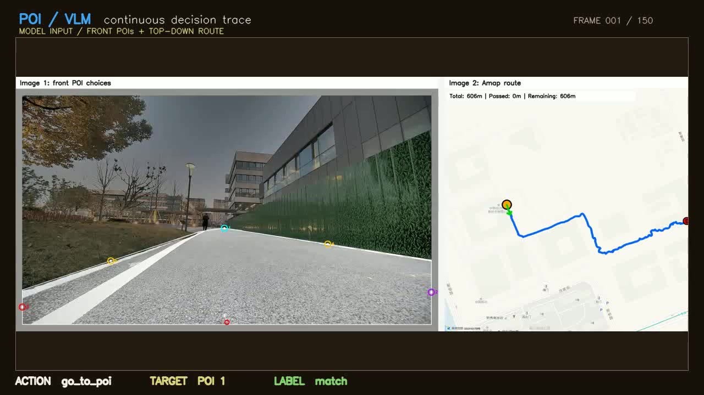
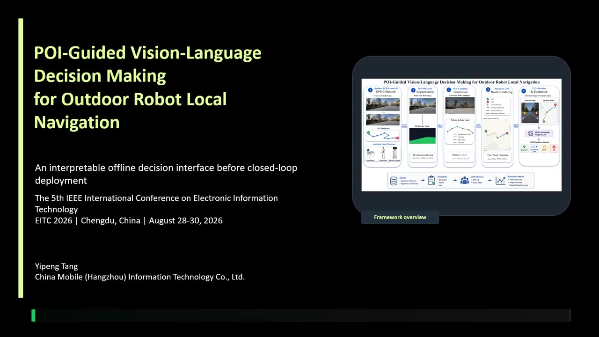
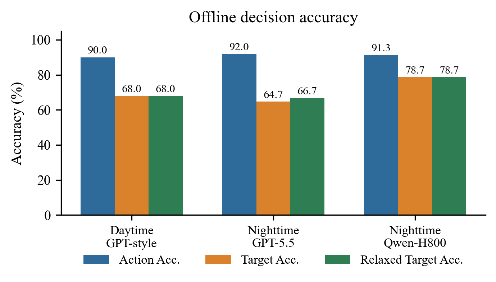

POI overlay
Run the bundled frame and mask through PolygonPOIGenerator. The output is a numbered polygon overlay plus a JSON record.
PROJECT WIKI / 研究 Wiki
POI-VLM is a small interface between perception and local navigation: a clean traversability mask becomes numbered candidates, a route cue adds direction, and a VLM returns a structured action.

RUNNABLE PIECES / 可运行部分
The public examples keep the two boundaries explicit: local POI generation is offline, while VLM inference is an optional provider call.
Run the bundled frame and mask through PolygonPOIGenerator. The output is a numbered polygon overlay plus a JSON record.
Send the same composed front/map view to a Chat Completions or Responses endpoint. Credentials stay in your environment.
Open the bridge ↗Inspect the endpoint, protocol, model name, and image input without a network request.
Read the commands ↗The bridge returns only action, poi_number, and reason; raw provider responses are not written.
REQUEST SHAPE / 请求结构
The example uses a composed image so the model receives the front POIs and the top-down route cue in the same turn.
{
"model": "your-vision-model",
"messages": [{
"role": "user",
"content": ["text", "image_url"]
}]
}OVERVIEW / 概览
The public package is designed to be read in one sitting: watch the trace, inspect the method, then open the code or local labeler.
The core idea is to convert an open-ended navigation target into a small set of visible points. Each point has a pixel location, edge type, and geometry source. The route cue supplies direction without asking the model to recover a map.
Scope: offline frame-level decision evaluation. It is not a closed-loop autonomy claim or a safety guarantee.
A binary or soft drivable-area mask from a segmentation model or a human annotation pass.
Boundary edges, a vanishing candidate, and stable numbering expose where a target came from.
go_to_poi, go_between_pois, rotate, or skip.
METHOD CHAIN / 方法链
The same artifacts support a paper figure, a model prompt, a human annotation view, and a release video.
Front-view evidence from an outdoor route.
image: H x WClean the traversable surface before extracting geometry.
mask: H x WClassify boundary edges and number feasible candidates.
points: [x, y]Use progress and heading as a directional cue.
trend: passed / leftSelect a target or motion primitive, then score it.
action: structuredI → M = Sφ(I) → P = G(M) → Q = (front, trend, P) → actioninspectable by designNormalize the mask. Fill small holes and keep the connected traversable surface.
Find the contour. Approximate the polygon and classify top, left, right, and vanishing edges.
Generate candidates. Apply priority-aware suppression so nearby points do not collapse into duplicates.
Compose the question. Pair the front POI view with a route-progress cue and an explicit action vocabulary.
The packaged trace keeps the same front/map pairing used at decision time. The media file remains review-required because it contains rendered route context.
EVIDENCE / 证据
The visual artifacts are intentionally more useful than a wall of raw records.
The trace keeps the front POIs and top-down route view visible while action and target update. It is the fastest way to understand what “continuous selection” means.
Watch the trace ↗
The compressed subtitle version preserves the soundtrack and is ready to share with a reviewer.
Open presentation ↗
150 metadata rows and 18 preview images expose the sequence without shipping GPS, prompts, or raw model payloads.
Read the dataset note ↗Current paper metrics, retained as a living snapshot until the publication link is public.
| Model | Frames | Action accuracy | Strict target |
|---|---|---|---|
| GPT-5.5 | 150 | 138 / 150 92.0% | 97 / 150 64.7% |
| Qwen-H800 | 150 | 137 / 150 91.3% | 118 / 150 78.7% |
BOUNDARY / 边界
A useful release says what is included and what is deliberately withheld.
POI generation, tests, annotation UI, and local server can be reused without project-specific paths.
Videos and preview images are packaged for human review. Image consent and third-party rights still need final sign-off.
Raw GPS files, route URLs, original recordings, API payloads, and credentials are outside the release.
The manuscript is a living snapshot. Add the venue link later without rewriting the package.
PROJECT SUMMARY / 项目摘要
A compact way to talk about the work without overselling it.
Segmentation and polygon extraction convert visual context into stable geometric candidates.
A VLM reasons over numbered POIs and a route trend, producing one parseable local action.
A local labeler, continuous trace, and release boundary make the research easy to inspect and update.
ONE-LINE TAKEAWAY
{kind=link}